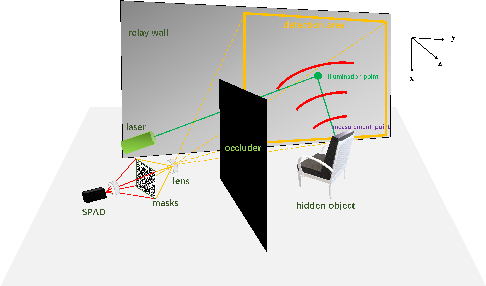
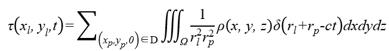
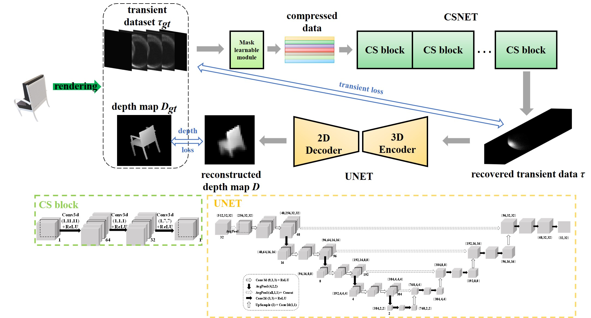
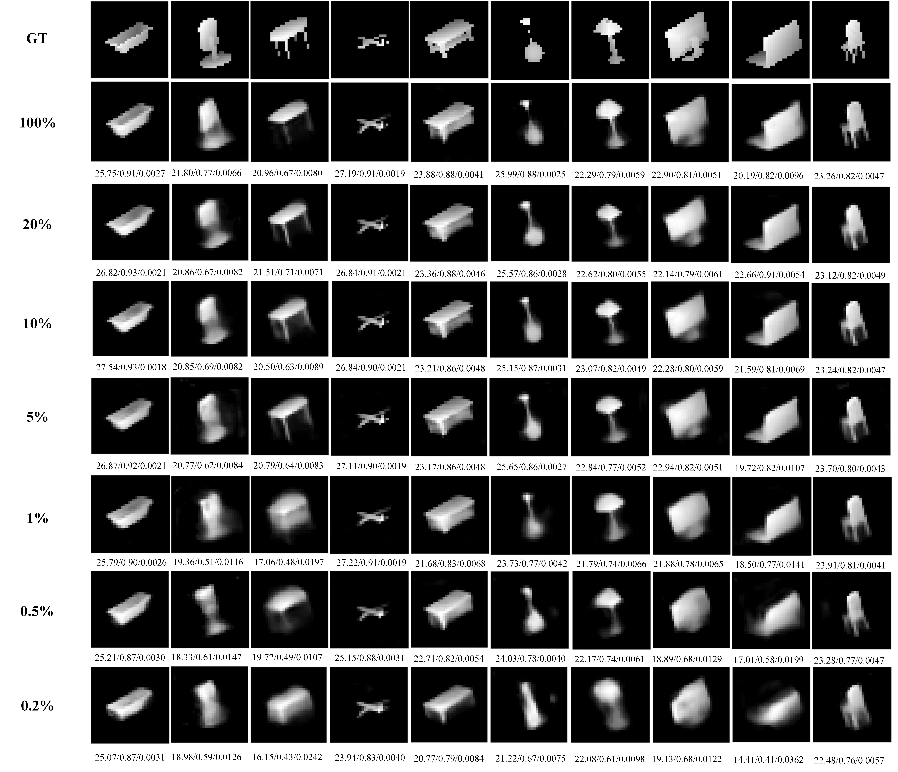
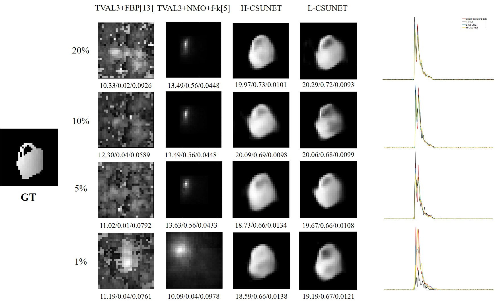
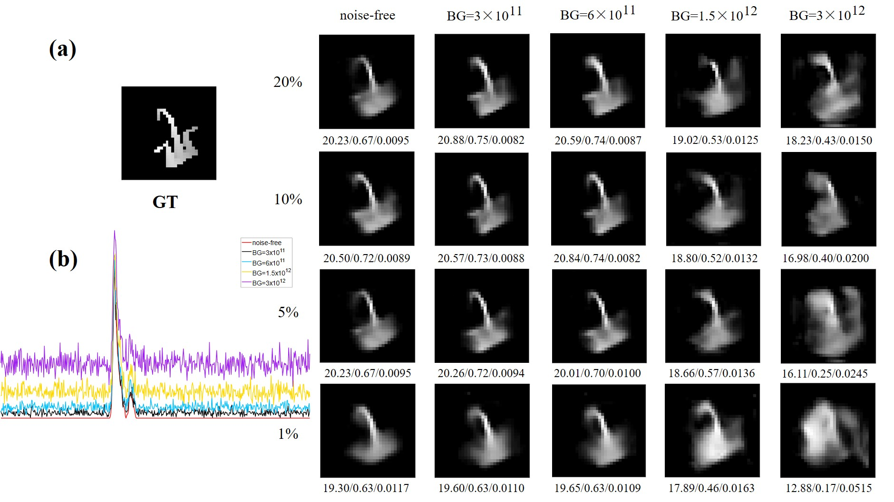
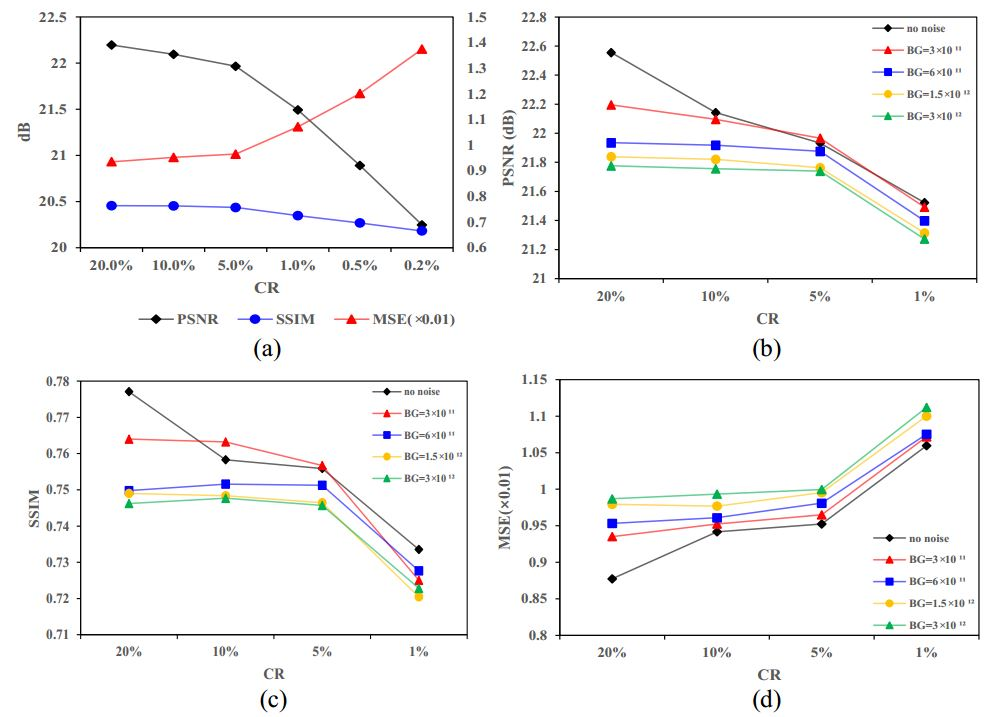

|
An Efficient Way for Active None-line-of-sight: End-to-end Learned Compressed NLOS Imaging PRCV 2023 Chen Chang, Tao Yue, Siqi Ni and Xuemei Hu* * xuemeihu@nju.edu.cn  |
|
Abstract Non-line-of-sight imaging (NLOS) is an emerging detection technique that uses multiple reflections of a transmitted beam, capturing scenes beyond the user's field of view. Due to its high reconstruction quality, active transient NLOS imaging has been widely investigated. However, much of the existing work has focused on optimizing reconstruction algorithms but neglected the time cost during data acquisition. Conventional imaging systems use me-chanical point-by-point scanning, which requires high time cost and not uti-lizing the sparsity of the NLOS objects. In this paper, we propose to realize NLOS in an efficient way, based upon the theory of compressive sensing (CS). To reduce data volume and acquisition time, we introduce the end-to-end CS imaging to learn an optimal CS measurement matrix for efficient NLOS imaging. Through quantitative and qualitative experimental compari-son with SOTA methods, we demonstrate an improvement of at least 1.4 dB higher PSNR for the reconstructed depth map compared to using partial Hadamard sensing matrices. This work will effectively advance the real-time and practicality of NLOS. |
|||
|
Method Forward Model Combined with Compressed Sensing The transient data is sparse both spatially and temporally, making it possible to reduce mask numbers for compression. We assume that after the laser illuminates a point on the wall, DMD is used to collect photons returned from all points within the detection area. Let the set of illumination points be L and the detection area be D. For illumination point and measurement point , transient histogram of the whole detection area can be expressed as: Let M be the set of masks that DMD displays, containing m masks with a spatial resolution of w×w. DMD scrolls through these masks to obtain m 1D histograms, assembled in width to form modulated photon transient data. To reduce acquisition time and the number of scanned points, while maintaining a uniform distribution of returned photon signals, illumination point l is located in the center of the detection area. Thus, the improvements to the original forward model have changed acquisition method from w×w mechanical scans to the current m electronic displays, significantly reducing the acquisition time.
Fig.1 Transient data and the process of compression. Network architecture: To reconstruct hidden objects from compressed data, we build an end-to-end neural network (CSUNET) consisting of a decompressor, an encoder and a decoder, where the decompressor serves to recover the compressed data to full size, the encoder serves to extract space-time features from the recovered transient data, and the decoder reconstruct the final depth map based on these extracted features. To optimize the CS measurement for NLOS imaging, a learnable CS module is introduced in the network, which automatically learns the optimal weights of CS masks for NLOS tasks based on the distribution of the training dataset. Fig.2 Network Architecture of the proposed method. Dataset and Training Strategies To test the proposed sampling model with CSUNET, we obtain the transient data and depth map corresponding to each sample using rendering code for single-point detection with appropriate scaling and spatial distribution based on ShapeNetCore. Then we add noise to transient data due to the significant amount of ambient noise included in actual imaging, as well as the presence of dark counts, time jitter, and detection probability caused by SPAD dead time. Due to the large data volume, it is impractical to use a few simple convolutional layers to extract spatiotemporal features, which leads to a large network size and makes it difficult to converge if trained directly from scratch. Thus, CSNET and UNET are trained separately first. After basic convergence, the learned parame-ters are used as initial weights for the overall network, keeping a lower learning rate to continue training. Normalization related to the distribution of transient data needs to be done when loading the dataset to facilitate convergence. |
|||
|
Results and Discussion Reconstruction of the Proposed End-to-end Network To evaluate our CS mask-learnable end-to-end network (L-CSUNET) for recon-structing hidden scenes using compressed data, we first test it on the generated dataset by randomly selecting different types of test samples and observing the reconstructed depth maps with their PSNR, SSIM and MSE metrics against ground truth (GT) at different CRs. To further validate the effectiveness of our network, we also report the mean values of reconstructed metrics for all samples in the test dataset in Table 1. There is no noticeable reduction in reconstruction quality when CR is reduced from 20% to 5%, and re-construction is still possible at only 1%, theoretically reducing sampling time significantly. Fig.3 Reconstructed depth maps with PSNR/SSIM/MSE metrics at different compression ratios. Ablation Study Existing reconstruction algorithms are commonly based on transient data ob-tained in confocal mode, whereas in our forward model, the illumination point l is always in the center of relay wall and the equivalent detection points p corresponding to DMD pixels do not coincide with l. Therefore, algorithms based on confocal mode cannot be used directly. We index the 3D albedo obtained by the above method in depth to obtain a depth map, which is compared with H-CSUNET and L-CSUNET. With conventional algo-rithms, we use TVAL3 to complete the process of recovering full-volume transient data from the compressed. The depth map reconstruction of our proposed network is significantly better than the other methods at different compression ratios. Conventional methods have a small reconstruction depth range, which can only locate the foremost position of the side of the hidden object towards to relay wall roughly, causing deeper information almost lost completely. Moreover, the methods are sensitive to noise, the resulting depth maps contain a lot of scatter noise and object contours are blurred. Fig.4 (a) Depth map reconstruction based on different methods;(b) Histograms of a randomly selected point of the recovered transient data. Big Noise In this section, we observe the robustness to noise of L-CSUNET by increasing background noise BG at different levels, considering that dark counts are related to the quality of SPAD itself, which is generally assumed to be 3000 counts/s and does not vary with the external environment. In all previous experiments, BG is set to 3× 10 ^11 counts/s, here we consider three noise levels with BG set to 6× 10 ^11 , 1.5× 10 ^12 and 3× 10 ^12 counts/s. Fig. 5(a) shows reconstruction under each noise level, Fig. 5(b) shows the effect of different noise levels on a single-point transient histogram and gives the noise-free data for comparison, and Fig. 6(b-d) give the evolution of respective average metrics with compression ratios. Since our network is trained on the dataset containing noise, metrics of no-noise data will fluctuate compared to other noisy data. We see that even under very strong noise, L-CSUNET still performs well in reconstruction. Fig.5 (a) Reconstruction under different noise levels; (b) Effect of noise on transient data. Extremely Low CR To further reduce acquisition time and explore the possibility of reconstruction at an extremely low CR, we reduce CR to 0.5% and 0.2%, which means recon-structing hidden scenes will be achieved with only 5 and 2 masks at a spatial resolution of 32 × 32. Fig. 3 shows their reconstruction results. The information needed for reconstruction can still be extracted by the network from transient data after extreme compression, which not only demonstrates the pow-er of our network in extracting spatiotemporal features but also shows that the sparsity of transient data can provide ample room for maneuvers to reduce acquisition time in real experiments. To observe the changing trend of reconstruction performance with CR, we plot the average metric change graph of depth maps in Fig. 6(a), and find that the deterioration of reconstruction is accelerated starting from a CR of less than 5%, so for real acquisition, considering the possible errors and some uncertainty, CR should not be lower than 5% to ensure the validity of acquisition data. Fig.6 Average metric changes of depth maps. (a) with CR, (b-d) on different noise levels. |
|||
|
More Details | |||
|
Bibtex @article{10.1007/978-981-99-8537-1_3, author={Chang Chen and Yue Tao and Ni Siqi and Hu Xuemei}, title={An Efficient Way for Active None-Line-of-Sight: End-to-End Learned Compressed NLOS Imaging}, booktitle={Pattern Recognition and Computer Vision}, year={2024}, publisher={Springer Nature Singapore}, pages={28-40}, isbn={978-981-99-8537-1}, url={https://link.springer.com/chapter/10.1007/978-981-99-8537-1_3} } |